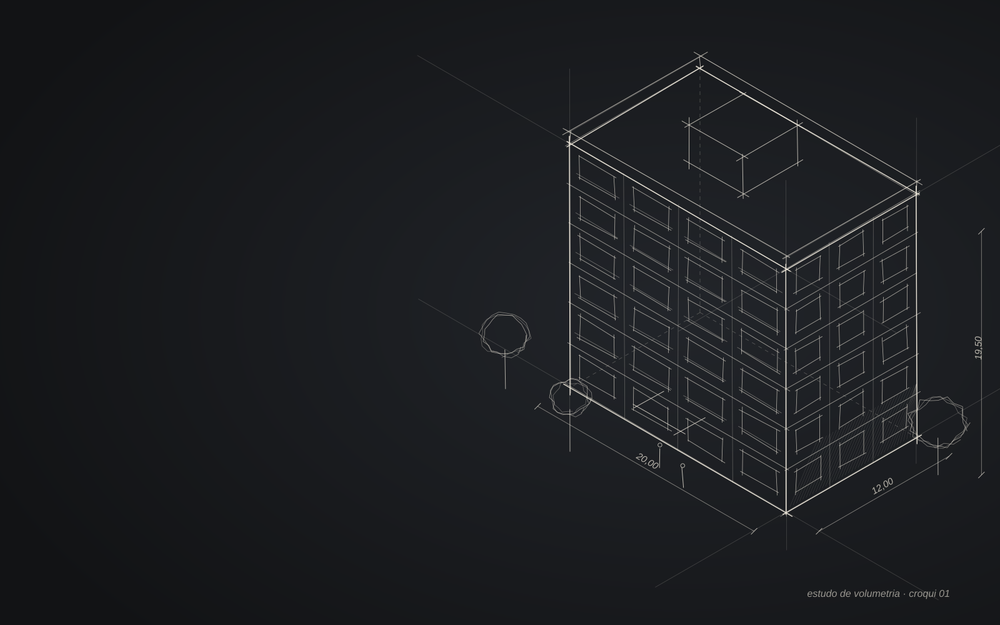
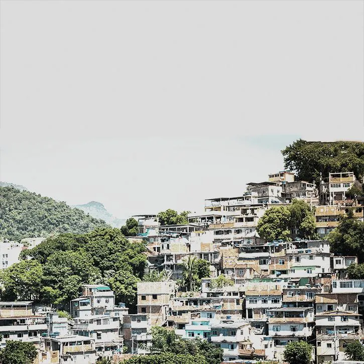
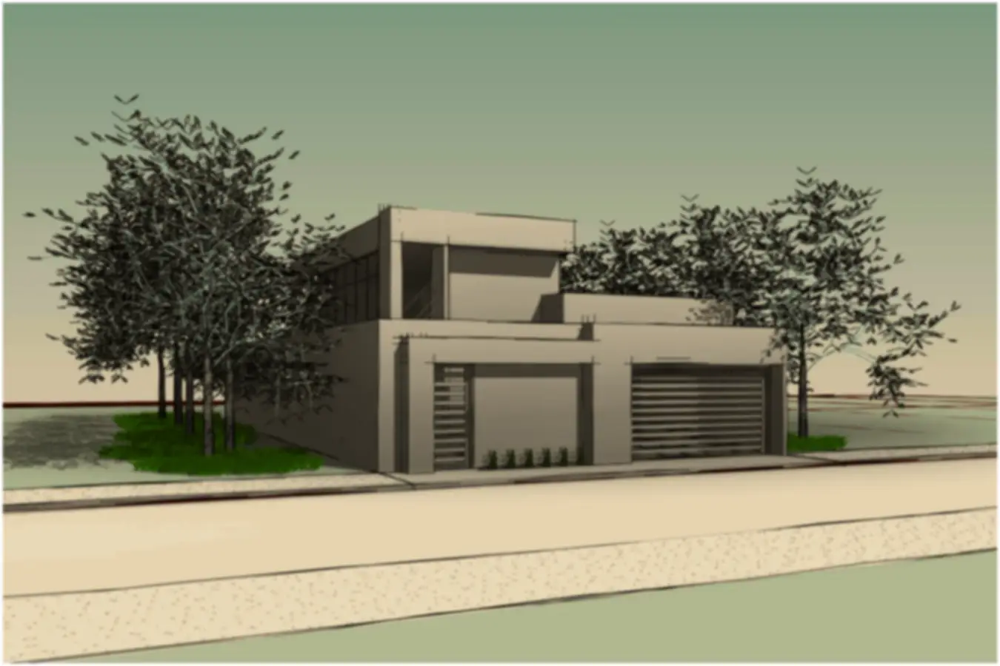
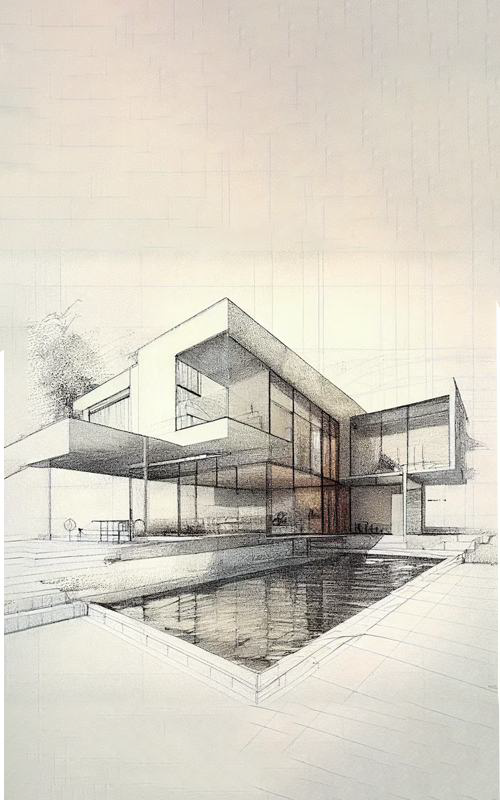

01
Regularização fundiária
Levantamento e documentação técnica para regularizar imóveis e núcleos urbanos.
- Levantamento do imóvel
- Planta e memorial descritivo
- Mapas no QGIS

ENGENHARIA CIVIL · REGULARIZAÇÃO · 3D
Sou Juan, técnico em Edificações e estudante de Engenharia Civil. Acompanho cada etapa da obra, do primeiro traço à entrega.
01 · Projeto · croqui à mão e estudo de volumetria
Passe o mouse no prédio para ver a próxima etapa. Clique para avançar.Toque no prédio para avançar de etapa.
01 — SOBRE
Comecei pelo curso técnico em Edificações, passei pela Contabilidade e encontrei meu caminho na Engenharia Civil. Hoje, no estágio, acompanho a execução de obra de perto: medições, registros e a conversa com quem está no canteiro.
Gosto de juntar o técnico com o visual. Uso modelagem 3D para mostrar o projeto de um jeito que qualquer pessoa entende, e tenho interesse especial em regularização fundiária: colocar no papel a cidade que já existe.
02 — FERRAMENTAS
Do desenho técnico ao cálculo estrutural, passando pelo 3D e pelo mapa.
Plantas, cortes, fachadas e plantas de regularização.
DESENHO TÉCNICOModelagem BIM e compatibilização do projeto.
BIMModelagem e detalhamento de estruturas de concreto.
ESTRUTURALRenders e vídeos realistas a partir do modelo.
RENDERModelagem livre e animações 3D.
3D E ANIMAÇÃOMapas, geoprocessamento e levantamentos para regularização.
GEOPROCESSAMENTO03 — SERVIÇOS
Quatro frentes que se completam: entender o terreno, desenhar, mostrar em 3D e acompanhar a execução.
Levantamento e documentação técnica para regularizar imóveis e núcleos urbanos.
Desenhos claros e completos, prontos para aprovação e para a obra.
O projeto em 3D e em imagens realistas, para enxergar antes de construir.
Registro do andamento e relatórios visuais para quem quer acompanhar a obra.
04 — PORTFÓLIO

Levantamento e planta fundiária para regularização via REURB. [Quantos lotes e qual foi o seu papel.]
Apresentações periódicas do avanço da obra, montadas a partir do diário de obra para reuniões com o cliente.

Modelagem e renderização de edificações para mostrar o projeto antes de construir. [Nome do projeto]

Projetos feitos na faculdade e por conta própria, do croqui ao detalhamento. [Disciplina ou tema]
Site com o prédio em 3D mostrando o avanço da obra para os proprietários.
05 — CONTATO
Clientes, construtoras e escritórios: me chama no WhatsApp ou deixe uma mensagem. Respondo o mais rápido que der.